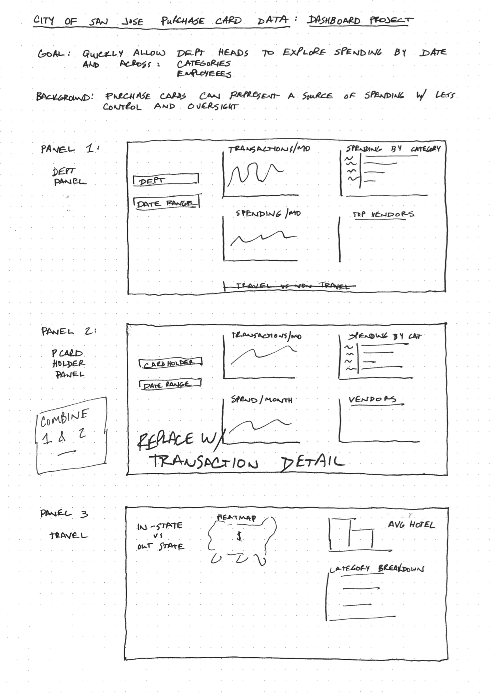

14 Interactive Dashboards

14.1 Purpose
The goal with an interactive dashboard is often not “tell a story” as much as it is to “enable the user to explore the data for themselves.” But that doesn’t mean we send them out into the vast reaches of the universe all alone! They can get lost in the data or miss valuable insights if we don’t design an effective dashboard.
Here’s an example of an interactive dashboard that allows users to explore purchase card transactions made by municipal employees of the City of San Jose. Purchase cards (credit cards) linked to corporate or government accounts are an important tool that streamline travel and expense reports, but require oversight to keep spending under control.
You can try it out here. Is this dashboard perfect? Certainly not. (For one thing, it’s not even finished yet…). But it’s pretty good. The exact parameters of the dashboard would need to be determined by the end-user…probably the finance staff or department managers.
14.2 Common Tools
There are a variety of tools commonly used to build dashboards. Which tool you use will depend on your firm, security and pricing requirements.
Even Microsoft Excel can be used to build powerful dashboards. It’s not about the tool so much as intentional design and thought about how the user will interact with the data.
14.3 Guidelines for Dashboards
14.4 Visual Layout
14.4.1 F and Z Scanning Patterns
14.4.2 Golden Ratio
14.5 Project Plan
14.5.1 Lay Groundwork
14.5.2 Exploratory Data Analysis
You may begin exploratory data analysis at this point. You should also be familiar with the data and the data dictionary, and familiarize yourself
14.5.3 Develop Concept
Before you do any coding, you should develop a plan for what you’re going to build. For shorter projects, this may just be a sketch on paper or on a whiteboard. If this is for a client, consider a mockup (eg, in Visio, Powerpoint, or Adobe Illustrator) to get their buy-in. An example of a sketch for a dashboard is below.

Changes can happen, and it’s expected that as you look at the data, you’ll adjust how you lay things out. Notice that this sketch has some edits and notes on it. The sketch is just intended to help you be deliberate about your dashboard and to gain consensus among the team before valuable time is spent coding and building.